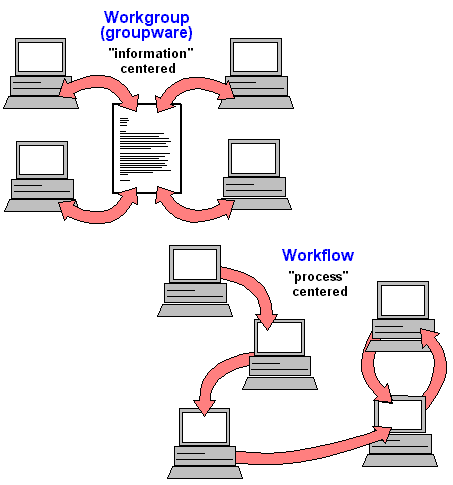
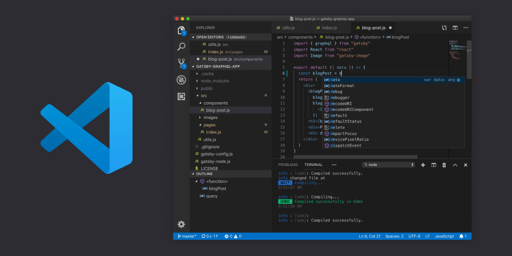

Aplikace jsou uživatelské programy určené pro jeden nebo více speci-fických účelů. Pro spouštění
aplikací je
nezbytná přítomnost základní-ho software - operačního systému.
Základní aplikační software
Kancelářské balíky
Symbolický „balík“ programů obvykle tvoří textový pro-cesor, tabulkový
procesor, nástroj na tvorbu prezentací,
databázový systém, někdy i groupwarové nástroje (systémy organizování času, zajišťování schů-zek),
grafické
editory
apod. Vedle komerčních Microsoft Office či Apple iWork existují také balíky
OpenOffice nebo
WPS Office,
dostupné zdarma
a pro řadu platforem.
Microsof Office
Grafické aplikace.
Oblast grafiky je velmi široká; grafické programy umožňují vytvoření
grafických dokumentů přímo v
počítači, skenování papírových před-loh i zachycení obrazu digitálním fotoaparátem. Dominantní postavení
v
této oblasti
zaujímá profesionální software firmy Adobe (např.
Adobe Photoshop, Adobe Illustrator aj.). Mezi
oblíbené
multiplatformní
opensource grafické ap-likace patří např. rastrový editor GIMP nebo vektorový Inkscape. Svébytné oblasti
počítačové
grafiky tvoří programy pro tvorbu animací, rozsáhlé kon-strukční systémy CAD
(Computer
Aided Design) nebo programy DTP
(Desktop Publishing) určené pro tvorbu tiskovin.
adobe produkty
Multimediální programy.
Umožňují vytváření, zpracování a prezentaci mul-timediálních, tedy
především audiovizuálních dat
na počítači. Kromě nejrůz-nějších multimediálních přehrávačů zde můžeme zařadit řadu programů pro
editaci
digitálního
zvuku nebo videa, programy pro tvorbu multimediálních pre-zentací, výukové programy, ale také rozsáhlou
oblast
počítačových her.
adobe after effects
Programy pro komunikaci v počítačové síti.
Slouží pro správu počítačo-vých sítí, vzdálené
řízení počítače, přenos a
přístup ke vzdáleným souborům a vzdálený tisk, pro připojení vnitřní podnikové sítě (intranet) na síť
celosvětovou
(Internet) přes poskytovatele Internetu. K základním uživatelským (klientským) aplikacím patří webové
prohlížeče,
klienty elektronické pošty a groupware (software pro skupinovou práci), prostředky online komunikace
(IM
-
Instant
Messaging) a jiné

Groupaware
Informační a databázové systémy.
Informační systémy (IS - information sys-tems)
představují
komplexní programové
vybavení určité instituce nebo firmy. Základem IS jsou obvykle tzv. datové sklady (data
warehouse)
založené
na
databázových systémech. Podnikové informační systémy bývají označovány zkratkou ERP (Enterprise
Resource
Planning) a
jsou tvořeny celou řadou díl-čích programových modulů (např. moduly pro výrobu, logistiku, správu
ma-jetku,
účetnictví
...) K lídrům v oblasti informačních i databázových systémů patří velké firmy jako Oracle, Microsoft,
IBM,
SAP. Kromě
komplexních IS jsou vyvíjeny mnohé specializované aplikace pro podporu výrobních procesů, eko-nomických
transakcí a
nejrůznějších jiných pracovních činností
Oracle
Malware a antivirové programy.
Zatímco malware je počítačový program určený ke vniknutí
nebo poškození počítačového
systému, cílem antivirových programů (např. AVG, AVAST, ESET, Kaspersky Antivirus atd.) je chránit
počí-tačové systémy
před tímto nežádoucím softwarem
Antivirus Avast
Integrovaná vývojová prostředí.
Obvykle jsou označována zkratkou IDE
(In-tegrated
Development Environment) a používají
je programátoři k vývoji aplika-cí. Tradičně je tvoří editor s různými pomůckami pro psaní programového
kódu, ladicí
prostředky, překladače a další nástroje zefektivňující práci vývojářů.

Visual Studio Code